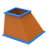

Sweep (two contours)
 | Generate side faces between two contours. → | 2024 |
Generate side faces between two contours with the same number of segments, optionally for planar contours with top and bottom faces and as a solid.
First contour
Curves: Select entities. The number of selected entities is displayed. All selected entities must complement each other to form a closed contour.
Second contour
Curves: Select entities. The number of selected entities is displayed. All selected entities must complement each other to form a closed contour.
Synchronization points
Relate a point or a position on the first contour to a point or a position on the second contour to avoid unwanted twisting. The software suggests a solution. A maximum of one synchronization point per contour is possible.
First: Select point or snap position.
Second: Select point or snap position.
More options
Invert: Correct the orientation of the contours if the faces intersect incorrectly in the preview.
Invert normals: The direction of the face normals of the generated faces is reversed.
With bases: A top face and a bottom face are created if the selected curves and face boundaries result in a closed contour line and are flat.
Solid: Collect the faces into a solid.